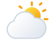

Dashboard Cuaca
Memahami Cuaca.
Mempersiapkan Hari.
SkyVanta membantu pengguna memahami kondisi cuaca aktual, melihat prakiraan presisi 72 jam, memantau curah hujan real-time, dan mempersiapkan seluruh aktivitas harian berdasarkan data meteorologi terverifikasi dari berbagai wilayah Indonesia.

Prakiraan 72 Jam Terperinci
Prediksi interval 3 jam suhu, tutupan awan, angin, dan probabilitas hujan berbasis model numerik BMKG.
Peta & Pantauan Curah Hujan
Visualisasi presipitasi aktual seluruh stasiun meteorologi Indonesia dengan klasifikasi intensitas hujan real-time.
AeroAI Weather Intelligence
Asisten meteorologi cerdas yang siap menjawab analisis cuaca, perbandingan kota, dan rekomendasi aktivitas luar ruang.
Mengapa SKYVANTA
SKYVANTA menghadirkan akses informasi cuaca dan gempa bumi berbasis data resmi BMKG yang mudah dipahami, lintas 38 provinsi Indonesia. Melalui visualisasi interaktif, peta sebaran stasiun, dan asisten AI AeroAI, pengguna dapat mengambil keputusan harian yang lebih aman dan berbasis data.
SDG 13 · Penanganan Perubahan Iklim
Peningkatan kesiapsiagaan terhadap dinamika cuaca ekstrem dimulai dari pemantauan kondisi atmosfer yang cepat dibaca. SKYVANTA mendukung hal ini melalui prakiraan 72 jam, peta suhu serta curah hujan real-time di 38 provinsi, grafik parametrik, dan peringatan cuaca berbasis data BMKG.
SDG 11 · Kota dan Permukiman yang Berkelanjutan
Permukiman yang tangguh membutuhkan informasi risiko bencana hidrometeorologi dan kegempaan yang terbuka bagi warga. Fitur pemantauan gempa InaTEWS BMKG, komparasi cuaca antarwilayah, serta panduan AeroAI membantu masyarakat merencanakan aktivitas dengan lebih siap.
Cerah Berawan
Kota Adm. Jakarta Pusat
Gambir, DKI Jakarta · Kode ADM4: 31.71.01.1001
Platform prakiraan cuaca seluruh wilayah Indonesia berbasis data terverifikasi. Prakiraan 72 jam disajikan dengan analisis suhu, kelembapan atmosfer, dan peringatan dini cuaca.
Analisis Cuaca BMKG
Risiko RendahMenganalisis data meteorologi terkini...
Rekomendasi Aktivitas
Rangkuman 3 Hari
PrakiraanWilayah Lainnya (Indonesia)
Peta Cuaca Interaktif Indonesia
38 Stasiun Meteorologi Ibukota Provinsi · Pemantauan Real-Time
Prakiraan Cuaca 72 Jam Terperinci
Interval 3 Jam · Model Meteorologi Numerik BMKG · Navigasi Horisontal Presisi
Prakiraan Cuaca 3 Hari (Multi-Siklus)
Analisis tren suhu maksimum, minimum, dan probabilitas presipitasi
Grafik Analisis Parametrik BMKG
Visualisasi 72 Jam: Suhu, Titik Embun, Curah Hujan, Tutupan Awan, Angin, dan Kelembapan Relatif
Dossier Meteorologi Lengkap
Parameter Validasi Cuaca
Tabel Data Mentah 72 Jam
Komparasi Cuaca Antarwilayah di Indonesia
Bandingkan parameter atmosfer, tren suhu, kelembapan, kecepatan angin, dan curah hujan berdampingan seluruh 38 provinsi di Indonesia
Kota Adm. Jakarta Pusat
DKI Jakarta · ADM4: 31.71.01.1001
Kota Surabaya
Jawa Timur · ADM4: 35.78.01.1001
Visualisasi Komparasi Metrik Meteorologi
Peta Interaktif Curah Hujan Indonesia
Distribusi Presipitasi Aktual Stasiun BMKG Nasional
Sumber: BMKG (field tp)
38 Stasiun TerpantauGrafik Curah Hujan 72 Jam
Profil presipitasi (mm) dan tutupan awan (%) di Kota Adm. Jakarta Pusat
Statistik Presipitasi
Nilai curah hujan diolah murni dari respons resmi tanpa data sintetis.
AeroAI Weather Intelligence
Asisten Meteorologi Cerdas · Cakupan Seluruh Indonesia
Indonesia Tsunami Early Warning System (InaTEWS)
Pusat Gempa Bumi & Geofisika BMKG Real-Time
Peta Sebaran Gempa Bumi Indonesia
Sebaran titik episentrum gempa bumi terkini & dirasakan di Indonesia
Daftar Gempa Terbaru
Maksimal 15 kejadian gempa bumi terkini (M ≥ 5.0 & Gempa Dirasakan BMKG)
Siaga Cuaca & Gempa
Panduan edukatif membaca prakiraan meteorologi dan kesiapsiagaan bencana
1. Cara Membaca Prakiraan Cuaca (Suhu Terasa, Probabilitas, Curah Hujan) + / -
Suhu Terasa (Feels Like): perkiraan suhu yang dirasakan tubuh manusia dengan mempertimbangkan suhu udara, kelembapan relatif, dan kecepatan angin.
Probabilitas & Kondisi Hujan: menunjukkan peluang terjadinya hujan pada rentang waktu prakiraan (interval 3 jam di SkyVanta) agar pengguna dapat menyiapkan perlindungan lebih awal.
Tingkat Curah Hujan: dikelompokkan menjadi Ringan (> 0 – < 2,5 mm), Sedang (2,5 – 10 mm), dan Lebat (> 10 mm).
2. Panduan Singkat Saat Cuaca Ekstrem & Gempa (Sebelum, Saat, Sesudah) + / -
Saat Cuaca Ekstrem: pantau peringatan dini resmi BMKG, hindari berteduh di bawah pohon besar atau papan reklame saat angin kencang dan petir, serta jauhi area rawan genangan dan banjir saat hujan lebat.
Gempa · Sebelum
Kenali jalur evakuasi dan titik kumpul, amankan perabot tinggi ke dinding, serta siapkan tas siaga berisi air minum, P3K, senter, dan salinan dokumen penting.
Gempa · Saat Terjadi
Tetap tenang; lindungi kepala dan leher di bawah meja kokoh (merunduk, berlindung, berpegangan), jauhi kaca dan tiang listrik, serta jangan menggunakan lift.
Gempa · Sesudah
Keluar bangunan dengan tertib ke area terbuka, waspada gempa susulan, periksa status potensi tsunami bila berada di pesisir, dan ikuti arahan resmi BMKG.
3. Cara Membaca Magnitudo, Kedalaman, dan Skala MMI + / -
Magnitudo (M): ukuran energi gempa di sumbernya (ditampilkan di peta sebaran dalam kelompok < 5.0, 5.0–6.0, 6.0–7.0, dan ≥ 7.0).
Kedalaman (km): jarak hiposenter di bawah permukaan bumi; gempa dangkal umumnya menghasilkan guncangan permukaan lebih kuat dibanding gempa dalam pada magnitudo yang sama.
Skala MMI (Modified Mercalli Intensity): tingkat guncangan yang dirasakan manusia dan dampaknya pada bangunan di suatu lokasi (dari skala I tidak terasa hingga XII kerusakan total).